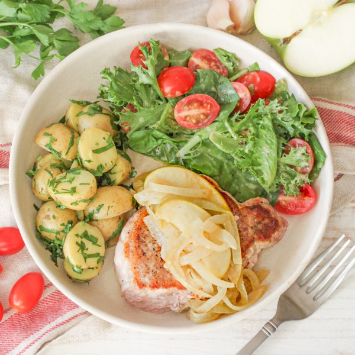

Pork Chop with Honey-Dijon Apples, Parsley Potatoes & Mixed Greens

Total Time
40 min
Nutrition (per serving)
647 kcalCalories
38 gProtein
56.5 gCarbs
32 gFat
Full nutrition table
| Calories | 647 kcal |
| Total fat | 32 g |
| Saturated fat | 13.2 g |
| Trans fat | 0.5 g |
| Cholesterol | 112.9 mg |
| Sodium | 198.9 mg |
| Carbohydrates | 56.5 g |
| Fiber | 9.7 g |
| Sugars | 20.7 g |
| Protein | 38 g |
| Potassium | 1816.2 mg |
| Calcium | 111.2 mg |
| Iron | 3.8 mg |
| Vitamin A | 756 IU |
| Vitamin C | 58.5 mg |
| Vitamin D | 23.5 IU |
Cookware
Ingredients
- 8 fl ozchicken or vegetable broth
- 4 clovesgarlic
- 2Granny Smith apples
- 1 pintgrape tomatoes
- 1 small bunchItalian (flat-leaf) parsley
- 1 ½ lbnew potatoes
- 4pork chops, boneless
- 1 (5 oz) pkgspring mix (mixed greens)
- 2 mediumyellow onions
- apple cider vinegar
- black pepper
- butter, unsalted
- Dijon mustard
- honey
- mayonnaise
- salt
Steps
- Wash and dry the fresh produce. (Skip the mixed greens if they came pre-washed.)1 ½ lb new potatoes
2 Granny Smith apples
1 pint grape tomatoes
1 small bunch Italian (flat-leaf) parsley
1 (5 oz) pkg spring mix (mixed greens) - Halve potatoes, place in a medium saucepan, cover with hot water (from the tap), and bring to a boil. Once boiling, reduce heat to medium and simmer until potatoes can be easily pierced with a fork, 10-12 minutes. Drain and return to the saucepan; cover to keep warm.
- Meanwhile, preheat a large skillet over medium-high heat.
- While the skillet heats up, pat the pork chops dry with paper towels and place on a plate; season with salt and pepper on both sides.4 pork chops, boneless
1 tsp salt
1 tsp black pepper - Once the skillet is hot, add butter and swirl to coat the bottom. Add chops and pan-fry until golden brown and cooked through, 3-4 minutes per side. Transfer to a clean plate and loosely cover with aluminum foil.4 tsp butter, unsalted
- While the chops are cooking, peel, halve, and thinly slice onions into half-moons; peel and mince garlic. Place both in a medium bowl.2 medium yellow onions
4 cloves garlic - Quarter and core apples, then slice into ¼-inch thick wedges; add to the bowl with the onion and garlic.
- When the chops are done, return the skillet (with cooking juices) to medium-low heat. Add onion, garlic, and apple; cook, stirring occasionally, until the onion and apple are soft, 4-5 minutes. (Reserve bowl for the next step.)
- Meanwhile, place vinegar, mayo, Dijon, honey, salt, and pepper in the reserved bowl; whisk to combine the dressing.4 tsp apple cider vinegar
2 tsp mayonnaise
2 tsp Dijon mustard
1 tsp honey
¼ tsp salt
⅛ tsp black pepper - Halve tomatoes lengthwise and add to the bowl with the dressing; set aside.
- When the onion and apple are soft, add broth, Dijon, and honey to the skillet; bring to a simmer and cook, stirring occasionally, until slightly thickened, 3-4 minutes. Remove from heat.8 fl oz (1 cup) chicken or vegetable broth
4 tsp Dijon mustard
2 tsp honey - Meanwhile, shave parsley leaves off the stems; discard stems and mince the leaves.
- Return the saucepan with potatoes to low heat; add butter, parsley, and salt. Cook, stirring frequently, until butter and parsley coat the potatoes, 2-3 minutes. Remove from heat.2 tbsp butter, unsalted
¼ tsp salt - Add mixed greens to bowl with dressing and tomatoes; toss to combine the salad.
- To serve, divide pork chops, apple sauté, potatoes, and salad between plates. Enjoy!